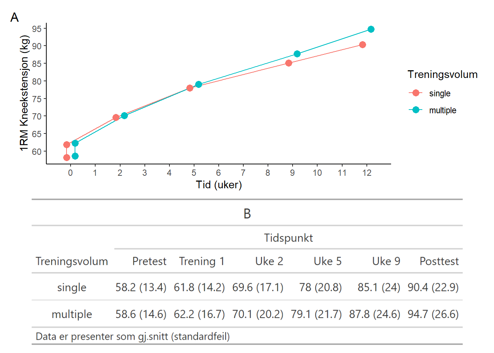
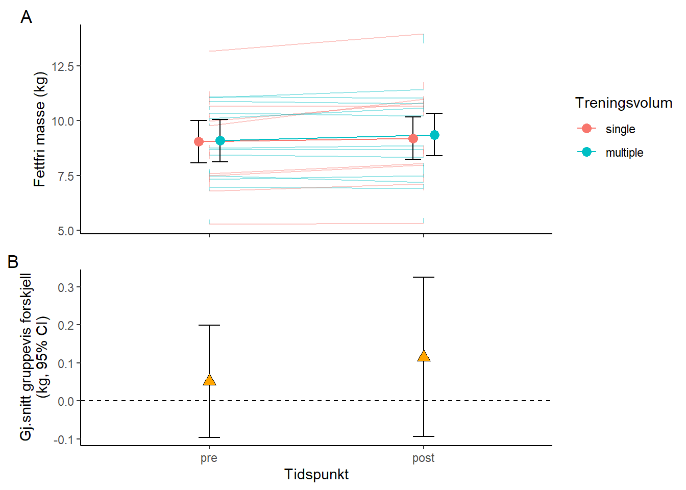

| gj.snitt (SD) | |
|---|---|
| N | 19 |
| Alder | 21.9 (1.49) |
| Kroppslengde | 178 (9.56) |
| Kroppsvekt | 71.8 (11) |
| Fettfri Masse | 9.07 (1.9) |
| 1RM Kneekstensjon | 58.4 (13.8) |
| Forkortelser: lean.mass, fettfri masse; load, 1RM kneekstensjon | |
Assignment 5
Introduksjon
I utrente personer som begynner med styrketrening varierer økningen i muskelstyrke, målt som 1RM, med 1% per økt, men med en variasjon på hele 0.1-3% (McDonagh & Davies, 1984), og tverrsnittet til de styrketrente musklene øker 0.1-0.5% per økt (Wernbom et al., 2007). Den store varisjonen i styrke- og muskelvekst er sannsynligvis avhengig av hvilken muskelgruppe som trenes, fibertypesammensetning, antall serier, repetisjoner, intensitet, pausetid og genetiske ulikheter (Raastad, 2010; Tønnessen & Rønnestad, 2018; Wackerhage, 2014).
Sannsynligvis er det et dose-respons-forhold mellom treningsmengde og styrkeøkning per tidsenhet (Raastad, 2010). Treningsmengden er både avhengig av antall økter i uka og hvor mange serier eller øvelser vi trener på hver muskegruppe. Ettersom tidsbegrensninger ofte hindrer deltakere i treningsprogrammer (Choi et al., 2017) er det av interesse å finne den minimale treningsdosen som gir gunstige adaptasjoner. Oversiktsarikler fra en amerikansk forskergruppe løfter konseptet om at en serie i hver øvelse er den mest effektive treningsformen (Carpinelli, 2002; Carpinelli & Otto, 1998). Videre hevder de at det er bortkastet tid å gjennomføre mer enn en serie på en muskelgruppe. Andre meta-analyser viser at moderate treningsvolum (3 serier) er fordelaktig (Krieger, 2010, 2009). Disse ambivalente resultatene skyldes til dels denne store interindivid-variasjonen i treningsrespons. Intraindivide studiedesign med unilateral treningsvolum på ekstremitetene vil trolig fjerne mye usikkerhet.
Målet med denne studien var å undersøke effekten av singel- og multiserie (3 serier) treningsprotokoller på muskelstyrke og muskelmasse med et intraindivid studiedesign.
Metode
Deltakere og studiedesign
41 menn og kvinner deltakere ble rekrutert til den nåværende studien med initielle kriterier som ikke-røykene og alder mellom 18 og 40 år. Eksklusjonskriteriene var intoleranse til lokal bedøvelse, mer enn en ukentlig styrketreningsøkt det siste året, redusert muskelstyrke pga tidligere eller nåværende skader, og intak av medikamenter som kan påvirke adaptasjoner til trening. I dataanalysen ble alle deltakere som ikke gjennomførte kneekstensjonsstesting på hvert tidspunkt brukt (N = 22). Deltakernes karakteristikker vises i Table 1.
Intervensjonen bestå av 12 uker med helkropp styrketrening, alle deltakerne gjennomførte intervensjonen i løpet av september til november. Bein-øvelser ble utført unilateralt for å tillate innen-deltaker forskjeller i treningsvolum. Videre ble beinene til deltakerne tilfeldig fordelt til å utføre enten en serie (1 serie gruppen) og tre serier (3 serier gruppen), hver deltaker gjennomførte dermed begge protokollene. Maksimal muskelstyrke i kneekstensjon ble testet før (pre), underveis (uke 3, 5 og 9) og etter (post) intervensjonen. Kroppssammensetning ble målt før og etter treningsintervensjonen.
DXA
Kroppssammensetning ble bestemt før og etter intervensjonen med bruk av dual-energy X-ray absorptiometry (DXA) (Lunar Prodigy, GE Healthcare, Oslo, Norge), iht standard protokoll. Før DXA målinger ble deltakerne bedt om å være fastende i minimum to timer og frastå all fysisk anstrengende aktivitet de siste 48 timene. Mellom DXA målinger og forrige stykeøkt var det to dager.
Maksimal Styrke i kneekstensjon
Maksimal stykre i kneekstensjon ble målt som den høyeste repetisjonen (1RM) i en unilateral kneekstensjon. Testprotokollen begynte med en spesifikk oppvarming bestående av 10, 6 og 3 repetisjoner på 50, 75 og 85% av predikert 1RM. Deretter ble 1RM fundet ved å øke motstanden (kg) progresivt inntil vekten ikke ble løftet i hele bevegelsesbanen, den høyeste vekten med fult bevegelsesutslag ble definert som 1RM. Hver deltaker fikk 4-6 forsøk.
Dataanalyse og Statistikk
All beskrvende data er presentert som gj.snitt (standardfeil) om annet ikke er spesifisert. For å undersøke effekten av treningsvolum på muskelhypertrofi og styrke ble det brukt mixed linear models (LLMs) spesifisert med tid og tid til treningsvolum interaksjoner som fikserte effekter. LMMs ble spesifisert med tilfeldige intercepts for deltakerne. Plotter med residualer mot predikerte verdier ble visuelt inspisert for antakelser om homoskedastisitet. Statistisk signifikansnivå ble satt til < 0.05.
Resultat
Det ble ikke observert en effekt av treningsvolum på verken utvikling i 1RM kneekstensjon eller fettfrimasse i bein etter treningsintervensjonen, se Figure 1 og Figure 2.

Table 2 viser modelkoeffisienter fra LMMs for muskelstyrke.
| Koeffisienter | estimat | se | df | t.verdi | p.verdi |
|---|---|---|---|---|---|
| Intercept | 62.05 | 4.47 | 19.24 | 13.87 | 0.00 |
| Tid | 2.53 | 0.14 | 206.00 | 17.71 | 0.00 |
| Gruppe3serier | 0.10 | 1.32 | 206.00 | 0.08 | 0.94 |
| Tid:Gruppe3serier | 0.31 | 0.20 | 206.00 | 1.54 | 0.12 |
| Forkortelser: se, standardfeil; df, frihetsgrader | |||||
Table 3 viser modelkoeffisienter fra LMMs for fettfrimasse i beinene.
| Koeffisienter | estimat | se | df | t.verdi | p.verdi |
|---|---|---|---|---|---|
| Intercept | 9.04 | 0.46 | 18.37 | 19.58 | 0.00 |
| Tid | 0.15 | 0.08 | 54.00 | 2.03 | 0.05 |
| Gruppe3serier | 0.05 | 0.08 | 54.00 | 0.67 | 0.50 |
| Tid:Gruppe3serier | 0.12 | 0.11 | 54.00 | 1.07 | 0.29 |
| Forkortelser: se, standardfeil; df, frihetsgrader | |||||

Diskusjon
I denne studien så vi ikke en effekt av treningsvolum på utvikling i muskemasse eller muskelstyrke. For utrente individer ser det dermed ut som man får like stor styrke- og muskelvekst av å gjennomføre en serie per muskelgruppe som å gjennomføre tre serier. Dette samsvarer med oversiktsartiklene som hevder at det ikke finnes en ytterligere gevinst av å øke treningsvolumet utover en serie (Carpinelli, 2002; Carpinelli & Otto, 1998). Det samsvarer derimot ikke med meta-analyser som har konkludert med at moderat volum er fordelaktig på utvikling i muskelstyrke og muskelmasse (Krieger, 2010, 2009; Schoenfeld et al., 2017). Resultatene i denne studien bør imidlertidig tolkes forsiktig ettersom en nokså lav utvalgstørrelse på 19 senker den statistiske styrken. I tillegg var deltakerne på et lavt treningsnivå før treningsintervensjonen, dette er av betydning ettersom at effekten av treningsvolum på styrke- og muskelvekst er trolig lavere for utrente (Raastad, 2010). Generelt ser det ut til at jo bedre trent personen er, desto flere serier må personen trene på hver muskelgruppe (Peterson et al., 2004; Rhea et al., 2003).
Konklusjon
Denne studien indikerer at det for utrente ikke finnes en effekt av treningsvolum (1 serie vs 3 serier) på styrke- og muskelvekst på 12 ukers treningsprogram. Dette viser at gunstige treningsadaptasjoner oppstår på minimale treningsvolum som en serie per muskelgruppe. Resultatene bør allikevel tolkes noe forsiktet da det er noen metedologiske svakheter i studien, bl.a lav utvalgstørrelse og lav treningsstatus.
Referanser
Carpinelli, R. N. (2002). Berger in retrospect: Effect of varied weight training programmes on strength. British Journal of Sports Medicine, 36(5), 319–324. https://doi.org/10.1136/bjsm.36.5.319
Carpinelli, R. N., & Otto, R. M. (1998). Strength Training: Single Versus Multiple Sets. Sports Medicine, 26(2), 73–84. https://doi.org/10.2165/00007256-199826020-00002
Choi, J., Lee, M., Lee, J., Kang, D., & Choi, J.-Y. (2017). Correlates associated with participation in physical activity among adults: A systematic review of reviews and update. BMC Public Health, 17(1), 356. https://doi.org/10.1186/s12889-017-4255-2
Krieger, J. W. (2010). Single vs. Multiple Sets of Resistance Exercise for Muscle Hypertrophy: A Meta-Analysis. Journal of Strength and Conditioning Research, 24(4), 1150–1159. https://doi.org/10.1519/JSC.0b013e3181d4d436
Krieger, J. W. (2009). Single Versus Multiple Sets of Resistance Exercise: A Meta-Regression. Journal of Strength and Conditioning Research, 23(6), 1890–1901. https://doi.org/10.1519/JSC.0b013e3181b370be
McDonagh, M. J. N., & Davies, C. T. M. (1984). Adaptive response of mammalian skeletal muscle to exercise with high loads. European Journal of Applied Physiology and Occupational Physiology, 52(2), 139–155. https://doi.org/10.1007/BF00433384
Peterson, M. D., Rhea, M. R., & Alvar, B. A. (2004). Maximizing Strength Development in Athletes: A Meta-Analysis to Determine the Dose-Response Relationship. The Journal of Strength and Conditioning Research, 18(2), 377. https://doi.org/10.1519/R-12842.1
Raastad, T. (2010). Styrketrening: I teori og praksis. Gyldendal Norsk forlag.
Rhea, M. R., Alvar, B. A., Burkett, L. N., & Ball, S. D. (2003). A Meta-analysis to Determine the Dose Response for Strength Development: Medicine & Science in Sports & Exercise, 35(3), 456–464. https://doi.org/10.1249/01.MSS.0000053727.63505.D4
Schoenfeld, B. J., Ogborn, D., & Krieger, J. W. (2017). Dose-response relationship between weekly resistance training volume and increases in muscle mass: A systematic review and meta-analysis. Journal of Sports Sciences, 35(11), 1073–1082. https://doi.org/10.1080/02640414.2016.1210197
Tønnessen, E., & Rønnestad, B. R. (2018). Trening fra barneidrett til toppidrett. Gyldendal Olympiatoppen.
Wackerhage, H. (Ed.). (2014). Molecular exercise physiology: An introduction. Routledge, Taylor & Francis Group.
Wernbom, M., Augustsson, J., & Thome??, R. (2007). The Influence of Frequency, Intensity, Volume and Mode of Strength Training on Whole Muscle Cross-Sectional Area in Humans: Sports Medicine, 37(3), 225–264. https://doi.org/10.2165/00007256-200737030-00004